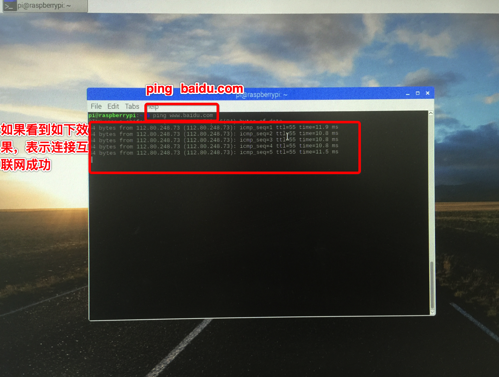
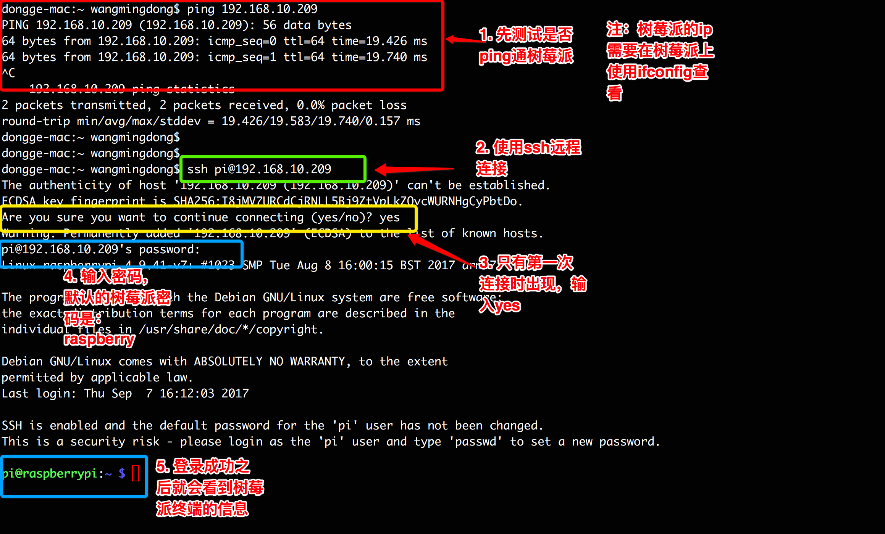
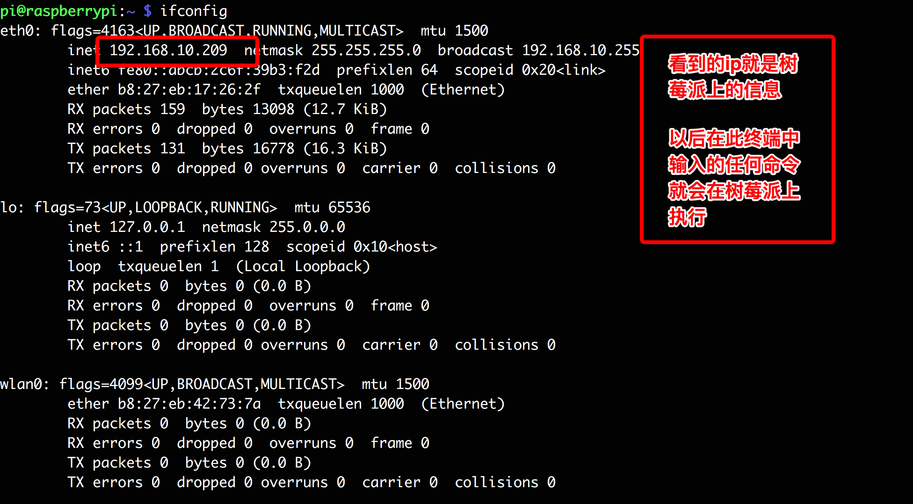
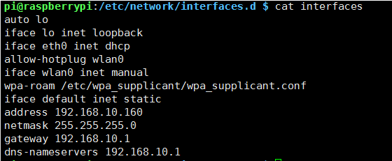

树莓派基本配置
连接互联网



开启ssh远程连接功能
目的：这样的话，以后操作就可以在自己的电脑上，通过ssh远程就可以控制树莓派了，很酷吧




1. 树莓派更换国内镜像源
1.1 使用管理员权限（sudo），编辑/etc/apt/sources.list
$ sudo vi /etc/apt/sources.list
用#注释掉原文件内容，用以下内容取代：
deb http://mirrors.tuna.tsinghua.edu.cn/raspbian/raspbian/ stretch main contrib non-free rpi
deb-src http://mirrors.tuna.tsinghua.edu.cn/raspbian/raspbian/ stretch main contrib non-free rpi
1.2 使用管理员权限（sudo），编辑/etc/apt/sources.list.d/raspi.list
$ sudo vi /etc/apt/sources.list.d/raspi.list
用#注释掉原文件内容，用以下内容取代：
deb http://mirror.tuna.tsinghua.edu.cn/raspberrypi/ stretch main ui
deb-src http://mirror.tuna.tsinghua.edu.cn/raspberrypi/ stretch main ui
注意： 网址末尾的raspbian重复两次是必须的。因为Raspbian的仓库中除了APT软件源还包含其他代码。APT软件源不在仓库的根目录，而在raspbian/子目录下。
1.3 更新软件源
编辑镜像站后，使用sudo apt-get update命令，更新软件源列表，同时检查您的编辑是否正确。
使用HTTPS可以有效避免国内运营商的缓存劫持，但需要事先安装apt-transport-https

2.树莓派禁止休眠、屏幕常亮
该设置应用于2017-06-21-raspbian-jessie版本
其中Raspbian使用了轻量桌面显示管理器即lightdm,通过该管理器可对xserver桌面会话交互、显示等进行设置.
2.1 打开lightdm.conf
sudo vi /etc/lightdm/lightdm.conf
2.2 修改lightdm.conf
找到[SeatDefaults]段下的xserver-command,取消注释,修改为如下:
#xserver-command=X
修改为
xserver-command=X -s 0 -dpms
说明：
- -s # –设置屏幕保护不启用
- dpms 关闭电源节能管理
2.3 重启之后生效
sudo reboot
3. 安装vim
默认情况下，只有vi，没有安装vim，因此如果需要使用vim，那么可以安装
sudo apt-get install vim
第一次启动会进入Raspi-config，后面配置方法同其他平台一样，参考使用raspi-config配置树莓派即可。
说明
如果想要安装其他的软件，思路基本都是一样的，如下
- 先百度/谷歌
- 查询到安装的命令，例如:
sudo apt-get install xxxx - 回到树莓派中输入命令进行安装
- 安装后测试一下，如果可用表示安装成功
4.树莓派连接网线时设置固定ip
cd /etc
vim dhcpcd.conf
在 dhcpcd.conf文件的最后添加

5.树莓派连接wifi时设置固定ip
